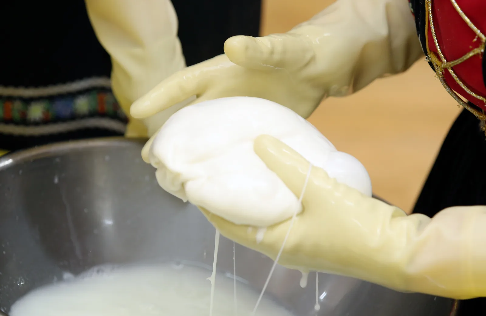
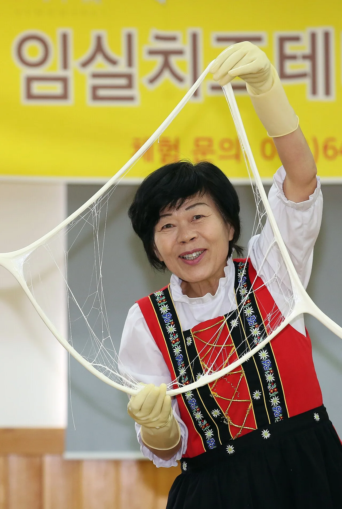
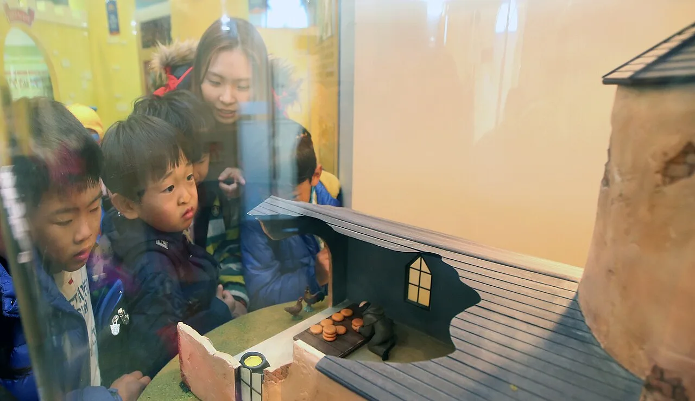

▲ 임실치즈테마파크 입구의 젖소 조형물과 아치 조형물. 뒤편에 치즈 역사관이 있는 치즈캐슬 건물이 보인다 사진=Wikimedia Commons (전한/Korea.net, CC BY-SA 2.0)
1. 임실치즈테마파크, 기본 정보부터
임실치즈테마파크는 전북특별자치도 임실군 성수면 도인2길 50에 있는, 국내 최초의 치즈 전문 테마파크다. 치즈 역사관과 체험관이 들어선 '치즈캐슬', 유럽식 장미정원, 어린이 놀이 공간인 치즈키즈랜드 등으로 구성돼 있다. 관람시간은 오전 9시부터 오후 6시까지이며, 매주 월요일(월요일이 공휴일이면 다음 날)과 1월 1일, 설·추석 연휴에는 문을 닫는다. 체험 프로그램은 성수기·주말에 조기 마감되는 경우가 많아 공식 홈페이지나 전화(063-643-2300, 063-643-3400)로 사전 예약하는 편이 안전하다.
2. 치즈 만들기부터 4D 영상관까지, 체험 프로그램
테마파크의 체험관은 치즈관·테마관·파크관으로 나뉜다. 방문객들은 흰 위생장갑을 끼고 원유를 굳혀 모차렐라나 스트링치즈를 직접 늘려보는 치즈 만들기 체험, 우리 쌀로 만든 도우 위에 직접 만든 치즈를 올리는 피자 만들기 체험을 할 수 있고, 이 밖에 천연비누 만들기, 서바이벌 게임, VR 스포츠 체험, 4D 영상관 등도 갖추고 있다. 공식 홈페이지 기준 체험비는 치즈·피자 중 한 가지만 하는 단품 체험이 1인 1만6,000원(소요시간 치즈 60분·피자 30분)이고, 치즈와 피자를 함께 체험하는 결합 코스(D코스, 약 1시간30분 소요)는 개인 1인 3만원·단체 1인 2만8,000원이다. 여기에 식사까지 포함된 A·C·E코스는 단체 기준 1인 2만8,000원~4만1,000원 선이다. 입장료 자체는 평소 무료지만 가을 임실N치즈축제 등 특정 시즌에는 성인 4,000원(경로 3,000원·초중고생 1,000원, 임실군민·미취학아동·국가유공자·장애인은 무료)의 한시적 입장료가 부과된다. 체험 예약은 방문일 3일 전까지 홈페이지에서 가능하고 24개월 이상부터 접수되며, 중학생 미만은 보호자가 동반해야 한다. 성수기·주말에는 예약이 조기 마감되는 경우가 많다.

▲ 원유를 굳혀 만든 치즈 덩어리를 손으로 직접 늘려보는 체험 장면. 임실치즈테마파크의 대표 체험 중 하나다 사진=Wikimedia Commons (전한/Korea.net, CC BY-SA 2.0)

▲ 알프스 전통의상을 입은 진행자가 치즈 늘리기 시연을 하는 모습. 체험관에서는 이런 방식으로 치즈가 만들어지는 과정을 직접 보고 배울 수 있다 사진=Wikimedia Commons (전한/Korea.net, CC BY-SA 2.0)
3. 벨기에 신부와 산양 두 마리 — 한국 치즈 산업의 시작
한국 치즈 산업은 1964년, 벨기에 출신 디디에 세스테벤스(한국명 지정환) 신부가 임실성당 주임신부로 부임하면서 시작됐다. 당시 임실 지역 농민들은 논농사만으로는 가난을 벗어나기 어려운 처지였다. 지정환 신부는 농가 소득을 늘릴 방법을 고민하다 산양을 길러 치즈를 만들어보기로 하고, 유럽 현지 장인에게 직접 치즈 제조 기술을 배워와 마을 사람들에게 전수했다. 첫 시도는 실패를 거듭했지만 1967년 마침내 치즈 제조에 성공했고, 이듬해인 1968년 임실치즈공장을 세웠다. 1970년에는 체다치즈 개발에도 성공하면서, 임실은 이름 그대로 '치즈 마을'로 자리 잡았다. 지정환 신부는 2016년 2월 대한민국 국적을 취득했고, 같은 해 9월에는 지역산업진흥 유공자로 대통령 포장을 받았다. 2019년 4월 87세로 선종한 뒤 정부는 그에게 국민훈장 모란장을 추서했다.
📍 지정환 신부의 흔적을 찾아서
임실읍 시내에는 지정환 신부의 세례명(디디에)을 딴 카페와, 그의 헌신을 기리는 '임실치즈 역사'를 소개하는 공간들이 곳곳에 남아 있다. 매년 10월 열리는 임실N치즈축제에서도 그의 이야기를 다루는 프로그램이 이어진다.
4. 치즈 역사관에서 만나는 60년의 기록
치즈캐슬 안의 치즈 역사관에서는 지정환 신부의 정착기부터 산양 사육, 첫 치즈 제조 성공, 임실치즈공장 설립에 이르는 과정을 디오라마와 전시물로 보여준다. 아이들이 유리 전시창 너머로 옛 마을 모형을 들여다보며 치즈 역사를 배우는 모습을 흔히 볼 수 있다. 파크는 2011년 11월 문을 열었으며, 이후 임실치즈의 역사를 알리는 체험형 관광지로 자리 잡아왔다.

▲ 치즈 역사관의 디오라마 전시를 관람하는 방문객들. 지정환 신부 시절의 임실 마을 풍경을 재현해 놓았다 사진=Wikimedia Commons (전한/Korea.net, CC BY-SA 2.0)
| 연도 | 내용 |
|---|---|
| 1964년 | 지정환 신부, 임실성당 주임신부로 부임·산양 사육 시작 |
| 1967년 | 국내 최초 치즈 제조 성공 |
| 1968년 | 임실치즈공장 설립 |
| 1970년 | 체다치즈 개발 성공 |
| 2011년 | 임실치즈테마파크 개장 |
| 2016년 | 지정환 신부, 대한민국 국적 취득(2월)·대통령 포장 수상(9월) |
| 2019년 | 지정환 신부 선종, 정부 국민훈장 모란장 추서 |
5. 차로 20분, 성수산 왕의 숲까지 묶어서
임실치즈테마파크와 함께 돌아보기 좋은 곳으로는 같은 성수면에 있는 성수산 왕의 숲 생태관광지가 꼽힌다. 고려 왕건과 조선 태조 이성계가 각각 성수산 자락에서 백일기도를 올렸다는 이야기가 전해지는 곳으로, 편백나무와 진달래 군락이 넓게 펼쳐져 있고 상이암 인근에는 희귀한 청실배나무 등도 남아 있다. '왕의 숲 물길따라 여행' 등 계곡을 따라 걷는 체험 프로그램이 3월부터 11월까지 운영되며, 소요 시간은 약 2시간이다. 좀 더 멀리 이동할 여유가 있다면 옥정호와 붕어섬 생태공원, 국사봉 전망대까지 코스를 넓힐 수 있다. 옥정호는 섬진강댐 건설로 생긴 인공호수로, 아침 물안개가 피어오르는 풍경으로 널리 알려진 곳이다.
✅ 연계 코스 참고
· 성수산 왕의 숲 생태관광지: 성수면 성수리 107(성수산자연휴양림 주차장) 인근
· 체험 프로그램 문의: 성수산 에코매니저 협의회(010-3627-2263)
· 옥정호·붕어섬 생태공원까지는 추가로 차로 이동 필요, 당일 코스라면 동선을 미리 정하는 편이 좋다
6. 차로 가는 길과 하루 코스 정리
임실치즈테마파크는 순천완주고속도로 임실IC에서 당당마을 방면으로 진입하면 닿는다. 전주 방면에서는 17번 국도를 타고 남원 방향으로 이동하다 임실역을 지나 임실군청 진입로 반대편에서 좌회전하면 되고, 정읍 방면에서는 강진을 거쳐 30번 지방도를 이용할 수 있다. 대중교통을 이용할 경우 임실터미널이나 임실역에서 택시로 이동하는 방법이 있다.
오전에 도착해 치즈 역사관과 체험관에서 치즈·피자 만들기 체험을 하고, 점심은 테마파크 내 레스토랑이나 임실읍내 식당에서 해결한 뒤, 오후에는 차로 20분 안팎인 성수산 왕의 숲으로 이동해 숲길을 걷는 식으로 하루 코스를 짤 수 있다. 시간 여유가 있다면 옥정호까지 발걸음을 넓혀도 좋다. 치즈 체험 예약과 정확한 운영 정보는 출발 전 반드시 공식 홈페이지에서 다시 확인하는 것이 좋다.